Chromatographie
La chromatographie est une méthode séparative dans le but de séparer les composés et de les doser.
On va utiliser la chromatographie pour analyser les mélanges, chromatographie semi-préparatrice ou préparatrice afin de récupérer les produits purs.
On l'utilise aussi pour l'identification des éléments par couplage.
On va donc séparer les molécules d'un mélange.
Il existe plusieurs techniques chromatographique :
- selon la nature de la phase mobile
- en phase gazeuse
- en phase supercritique
- en phase liquide
Partage des constituants (solutés) des mélanges entre deux phases :
- phase stationnaire (PS) : elle ne bouge pas
- phase mobile (PM) : elle bouge

A partir du détecteur nous aurons un chromatogramme avec un pique par molécule.
Chromatographie en phase liquide
- sur colonne : contenue dans un tube
- de surface: contenue sur une surface (CCM)
Interaction entre solutés et phase stationnaire :
- ionique
- exclusion
- adsorption
- partage

Chromatographie d'exclusion : phase polymère, séparation en fonction de la taille des molécules
Chromatographie ionique : phase stationnaire chargée, séparation entre les interactions ioniques
Phénomènes chromatographiques :
- partage du soluté entre les deux phases : thermodynamique du système
- dispersion des molécules au cours de leur transfert dans la colonne (et du système) : cinétique du système
- combinaison des deux processus précédents : résolution du système
Chromatographie liquide et chromatographie gazeuse
- chromatographie de partage, interactions de van der walls et de liaisons H, on va utilisé le silice
- chromatographie d'adsorption (propriétés de surface), interactions en surface (par exemple charbon actif dans les hôtes). Il est beaucoup moins utilisé
Phénomènes chromatographiques :
-
partage du soluté entre les 2 phases : soluté phase mobile retenue par la phase stationnaire, partage de façon équilibré. Réalisé par un constante d'équilibre : fonction de la température lnK = delta G°/RT. Plus les molécules sont fortes, plus le soluté va être retenu en phase stationnaire; grandeurs thermodynamique
-
dispersion des molécules au cours de leur transfert dans la colonne : déplacement de phase mobile; grandeurs cinétique
-
combinaison des 2 processus : résolution
Aire du pic pour remonter à la concentration du soluté.
Grandeurs fondamentales : on va utiliser des mélanges de solvant.

Grandeurs thermodynamiques :
Facteur de rétention
facteur de rétention, k : lié au coefficient de partage, quantité de soluté dans la phase stationnaire sur la phase mobile.
k : Qs/Qm = CsVs / CmVm = K x Vs/Vm (constante pour un système chromatographique donné)
Si on augmente k il faut diminuer la température
k = (tr - tm)/tm (sans unité)
tr = temps de rétention : pic et tm = temps de molécule pas retenue par le solvant
k dépend :
- de la nature des phases (PS et PM).
- de la température
k est dépendant :
- du débit de la PM
- des dimensions géométriques de la colonne
La sélectivité
La sélectivité est temps entre 2 pics consécutives : distance entre les 2 pics : montre une différence d'interaction. Si un seul pic : co-élution des deux composés
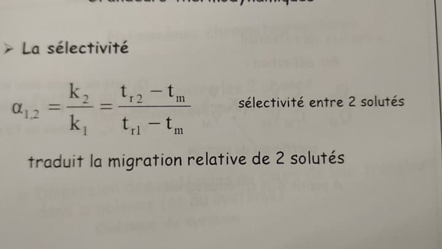
alpha dépend :
- de la température
- du système de phases, dépend de la phase mobile et de la phase stationnaire
Phénomènes de dispersion en chromatographie, les molécules ne vont pas arriver toutes en même temps. Elle va être fonction de la vitesse de la phase mobile -> grandeurs cinétiques :
- N : nombre de plateaux théorique
- HEPT : hauteur équivalente à un plateau théorique
Elles vont être indépendantes de la températures mais dépendant en fonction de la phase mobile.
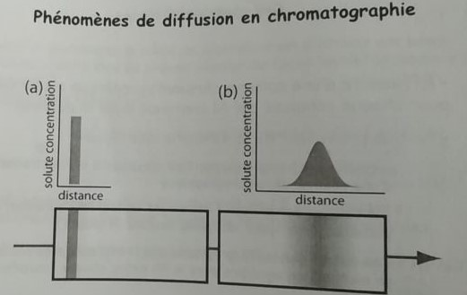
Importance de l'efficacité d'une colonne chromatographique : plus la valeur de N est grand, plus le pic sera fin. Cette diffusion est dû à la dispersion des solutés. Cette diffusion est "mesurée" par l'efficacité de la colonne chromatographique.
Grandeurs cinétiques
Plus le nombre d'équilibre est grand, plus le système sera efficace.
La théorie des plateaux établie que, après un certain parcours dans la colonne, les pics d'élution peuvent être assimilés à des courbes de Gauss.
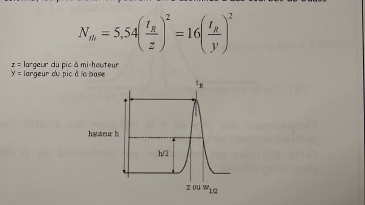
Nth est un nombre entier et n'a pas d'unité. Elle va être dépendante de la vitesse de la phase mobile.
Résolution
La résolution est deux fois la différence du temps de rétention sur la somme des largeur de pic à la base. Il existe une valeur seuil qui montre que c'est correcte : 1,5. Valeur minimale de résolution à avoir.
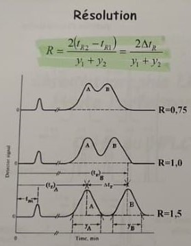
Pour augmenter R on augmente la distance entre les deux pics, la sélectivité et il faut diminuer les largeurs de pics, augmenter l'efficacité du système.
Il faut d'abord optimiser alpha en l'augmentant puis N en l'augmentant (pic plus fin) et enfin k mais il augmente la durée globale de l'analyse.
k = 0, pas de rétention donc le soluté n'est pas du tout fixé sur le système.
mélange simple : moins de 5 composés et mélange complexe entre 2 et 10 composés

Chromatographie liquide haute performance HPLC
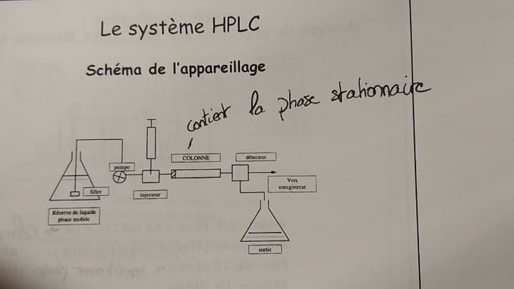
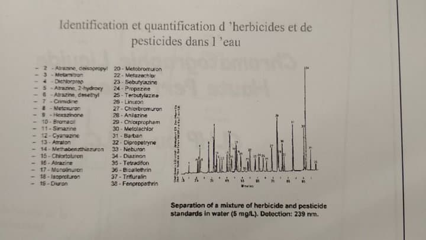
- PM : mélange de solvant, le solvant de base est l'eau
- boucle d'injection
- colonne
- détecteur : détection UV
- traitement et acquisition du signal
On va séparer les espèces d'un mélange partage entre une phase mobile est une phase stationnaire. Chaque soluté injecté sur la colonne est soumis à deux effets antagonistes : un effet d'entraînement par la phase mobile dans laquelle il est soluble et un effet de rétention par la phase stationnaire avec laquelle il interagit. Le soluté doit être soluble.

Chromatographie de partage
La séparation des différences de solubilité des solutés dans la phase mobile et des différentes interactions des solutés avec les groupements organiques greffées sur la phase stationnaire à base de silice.
On va utilisé la chromatographie de partage à polarité de phases inverses : le solvant de base est l'eau avec un solvant organique et la phase stationnaire et la silice dans lequel ont à formé un modèle organique. La phase stationnaire sera moins polaire que la phase mobile.
La silice est très polaire donc absorbante. La surface sont des silanols (groupement réactif) qui sont polaires afin d'avoir les interactions. Sur ces groupements en phase inverse on mettra des longues chaînes hydrocarboné octadecyle. On utilise pas seulement la silice car l'eau s'accroche à celle -ci. On utilisera une colonne C18.
Les grandeurs thermodynamiques
Les facteurs essentiels modifiant la sélectivité alpha sont :
-
la phase stationnaire
- nature du greffon
- nature de la silice
-
la phase mobile : force éluant
- nature du solvant organique
- composition eau - solvant dynamique (il faut qu'il soit miscible avec l'eau)
-
(la température) : colonne à température ambiante, on ne peut pas la modifier.
Composition de la phase mobile

phase stationnaire : on utilise le C18
hysochratique : on ne change pas la composition mobile durant tout le cycle.
gradient d'élution : on fait varier la composition de la phase mobile
Les grandeurs cinétiques
L'efficacité est une mesure de la dispersion à travers le système chromatographique. Elle dépend de la qualité de fabrication de la colonne.
Plus la valeur de n est petite, plus le pic sera plus large.
L'efficacité en fonction du diamètre des particule de silice.
Plus le diamètre des particule est petit, plus l'efficacité sera grande car on va générer plus de pression.
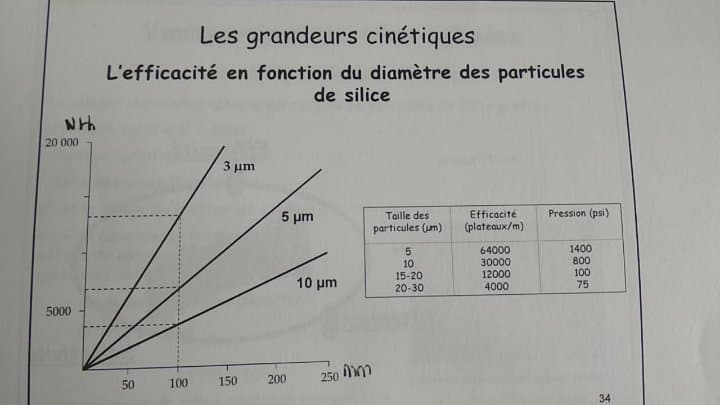
Loi de Darcy : si on diminue les diamètres des particules, on rejette plus de chaleur malgré le fait que ce soit efficace.
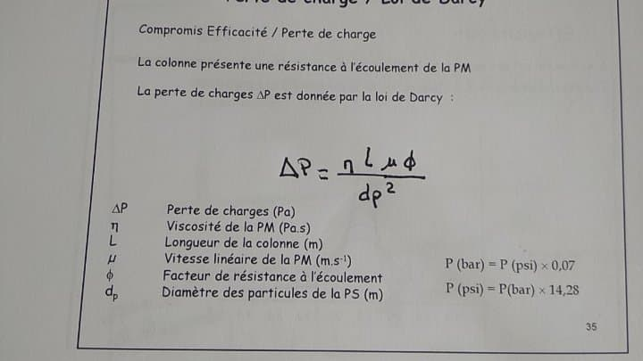
On utilise les gels de silice car c'est une structure poreuse, cela permet d'avoir une grande surface d'échange. C'est une surface spécifique/poreuse. Avec la surface de silice on a 350m²/g de silice. La silice est disponible commercialement dans différentes granulométries. Aujourd'hui, on utilise une taille de 5µm. Elle possède un groupement de réactifs à la surface. Elle est résistante à la pression.
La colonne chromatographique est remplie de particules de silices greffées : particules sphériques de 5µ. C'est la nature du greffon qui confère à la colonne sa sélectivité.
Pour un remplissage homogène et une efficacité optimale de la colonne , les particules doivent avoir le même diamètre et être sphérique.
On travaille en chromatographie de partage en phase inverse :
- phase stationnaire : silice greffée apolaire (modifiée chimiquement en greffant un chaîne alkyle)
- phase mobile : mélange eau - solvants organiques (polarité très variée)
- mécanisme : interactions hydrophobes
- espèces séparables : composés organiques moléculaires, moyennement à fortement apolaires
Les solutés les plus apolaires seront les plus retenus. Plus la molécule sera proche de la phase stationnaire plus il y aura des interactions.
Une augmentation du pourcentage de solvant organique du mélange éluant augmente l'affinité de la phase mobile pour la phase stationnaire. Dans ce cas, on va diminuer la rétention.
On va modifier le pourcentage d'eau ou du solvant.
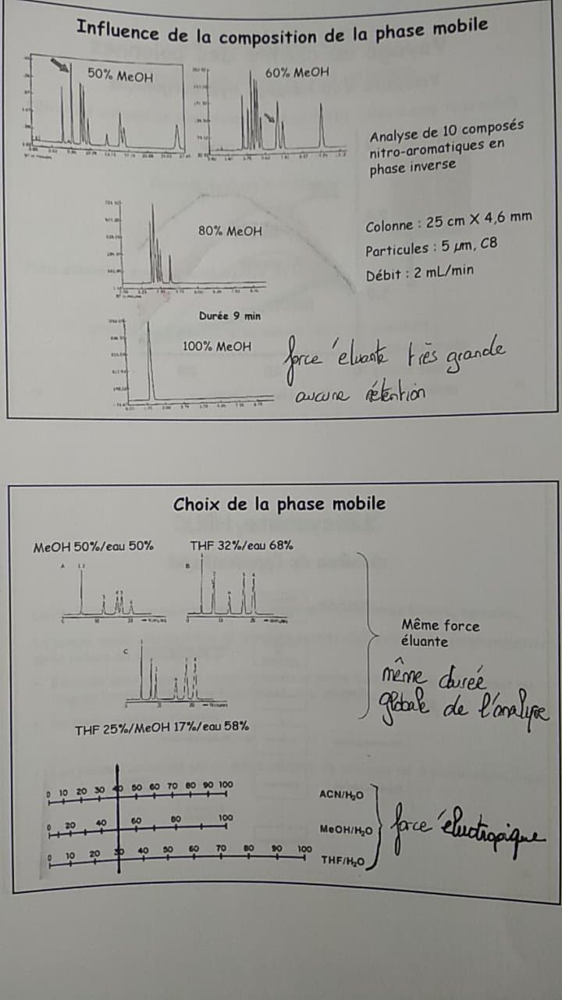
Le système HPLC
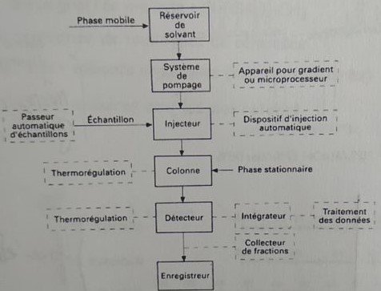
Le propanol permet de nettoyer car il est miscible avec tous les solvants.
La phase mobile peut être un solvant seul, mais également un mélange binaire, ternaire..
La pompe munie d'un système de gradient permet d'effectuer une programmation de la nature du solvant soit :
- en mode isocratique : la composition de la phase mobile est la même tout au long de l'analyse; la force éluant est donc constante
- en mode gradient d'élution : variation de la composition de la phase mobile pendant l'analyse pour augmenter la force éluant
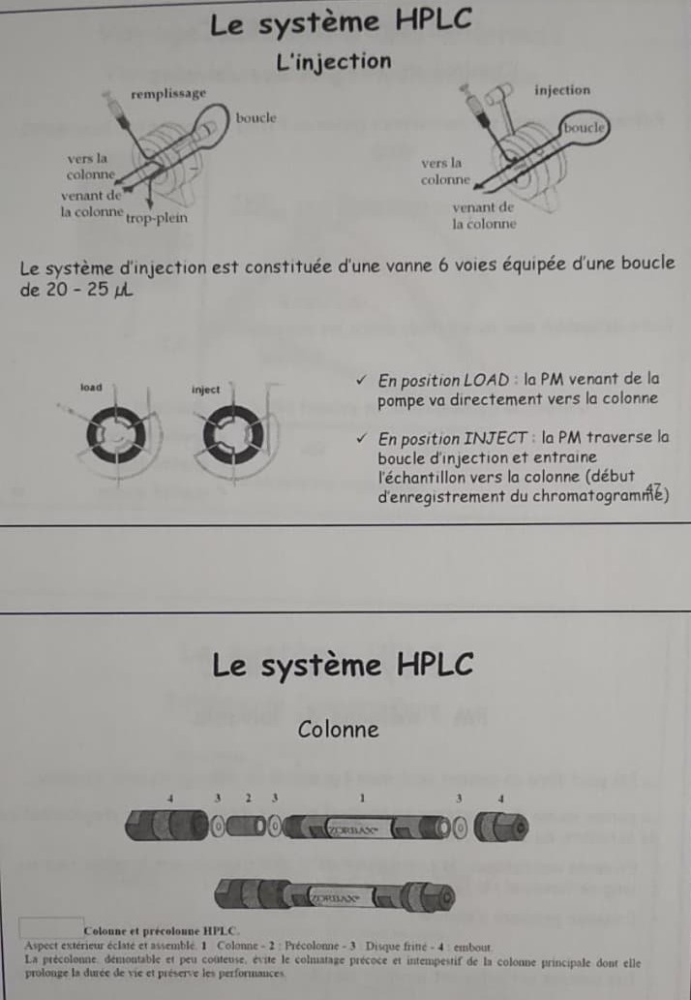
Un détecteur :
- spécifique ou universel
- domaine de linéarité (sensibilité)
- bruit de fond : c'est le signal enregistré en l'absence de tout soluté élué.
- quantité minimale détectable
- quantité minimale quantifiable
Il doit posséder :
- un faible niveau de dérive et de bruit de fond
- une sensibilité élevée
- une réponse rapide
- large domaine de linéarité
- faible volume : éviter l'élargissement du pic
L'absorbance A de la Pm est mesurée en sortie de colonne à une longueur d'onde delta. La phase mobile ne doit pas ou très peu absorber par elle - même à cette longueur d'onde. Le choix de ce mode de détection implique que les espèces analysées possèdent des chromophores (groupement chimique qui va nous donner une absorption caractéristique dans l'UV ou le visible). C'est un détecteur spécifique.
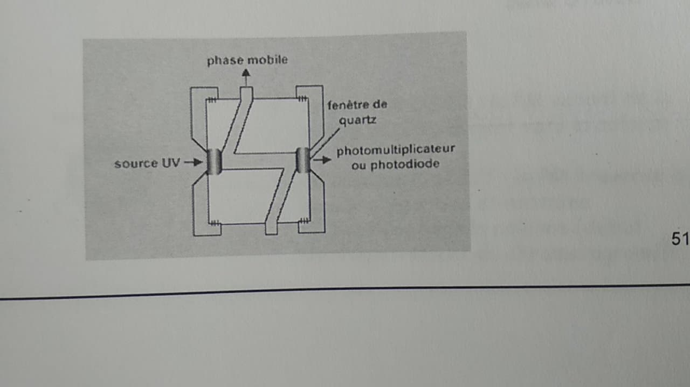
L'absorbance est le logarithme du rapport des intensités des rayons lumineux incidents (I0) et transmis (I). L'absorbance est liée à la concentration des espèces en solution par la loi Bert - Lambert.
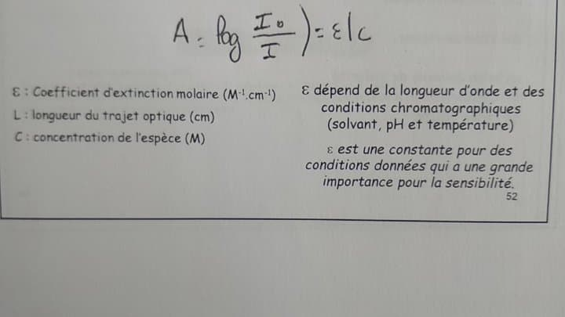 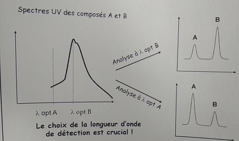
Chromatographie ionique
Molécule polarisable : molécule ayant une charge -> anions ou cations.
La chromatographie est un compromis entre la vitesse et la résolution et la sensibilité. On va utiliser un détecteur et un suppresseur. Pour la chromatographie ionique on va utiliser le PEEK comme polymère. Il faut une inertie chimique par rapport aux phases mobiles.
La séparation
Les paramètres de la séparation :
- capacité :liée à la rétention
- efficacité : Nth
- sélectivité :alpha
- résolution : retour de base entre les deux pics
Voyage au centre des colonnes
- substrat : mélange de deux polymères
- sites d'échange
L'efficacité
Mesure de dispersion à travers le système chromatographique. Elle dépend de la qualité de fabrication de la colonne et dépend de la taille des particules de la phase stationnaire. Plus l'efficacité sera grande, plus les pics seront fins.
La sélectivité
Elle est fonction de la thermodynamique de l'échange est définie comme le rapport des temps de rétention stricts de deux composés et est égale au rapport des constantes d'équilibre. Elle dépend des phases mobiles(nature des particules et nature du groupement fonctionnel) et phases stationnaires(augmentation du pH et type d'ion éluant), de la température et de l'état du composé à éluer.
Substrats et sites échangeurs
On va travailler avec des mobiles avec une stabilité chimique entre pH 0 ou et 14. On va donc utiliser un mélange de deux polymères pour remplacer la silice. Le polymère devra être poreux et on va pouvoir faire varier la porosité afin des phases stationnaires différentes et donc modifier la sélectivité. Le polymère va devoir résister à la pression, il sera donc réticulé.